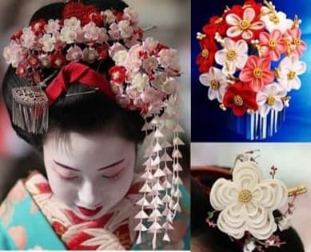

Інтернет-магазин
"КАНЗАШІ"
Що таке канзаші?
Канзаші – це японська традиційна прикраса для волосся, яку здавна носили жінки. Все почалося ще 1603 року, коли до влади прийшов клан Токугава. Існує думка, що саме гейші придумали укладати своє волосся у різні цікаві форми. Такий спосіб укладання називали – nihongami. До приходу до влади клану Токугава традиційно жінки Японії ходили лише з розпущеним волоссям. Для того щоб укласти своє волосся гейшам потрібні були спеціальні шпильки і шпильки, щоб створити ту форму, яка потрібна. Тоді не було жодних виробництв такого типу, тому всі шпильки жінки робили самостійно з матеріалів, які були на той час. Крім того, що шпилька була зроблена вручну, вона мала бути красивою зовні і зручною, щоб тримати довгі локони. Варто розуміти, що в Японії всі шпильки і шпильки повинні бути формалізовані. Канзаші мали бути непросто такими, як хоче жінка, вони повинні суворо відповідати статусу жінки та її віку. Тоді в стародавній Японії жінкам було заборонено прикрашати своє тіло будь-якими прикрасами. Єдине, що могла зробити будь-яка японка, це прикрасити своє волосся.
Як правильно носити?
Цю красу носять у свята та у повсякденному житті. У Японії вважалося, що канзаші повинні підбиратися безпосередньо під вік жінки. Молодим дівчатам вважалося доречним носити канзаші із великою кількістю квітів. Жінки у віці, навпаки, повинні використовувати в канзаші менше квіток на прикрасі. Їх можна одягати і для свят, і для повсякденного життя. У Японії в залежності від того, який зараз місяць є свій канзаші і свій колір кімоно. Є низка вимог, якими мають бути канзаші:

З чого мають виготовляти ?
У Європі канзаші роблять не лише з тканини, а й із пластику. Дуже багато дівчат роблять канзаші із справжнього дерева, яке згодом покривається японським лаком. Також часто прикраси для волосся роблять із золота або срібла. Зустрічаються і прикраси, які роблять із справжнього шовку та панцира черепахи. Найдорожчими та рідкісними вважаються канзаші, які були зроблені під час Едо.Якщо говорити про канзаші, які роблять сьогодні в країнах Європи, їх найчастіше виготовляють з не дуже дорогого матеріалу, а також пластику. Всі декоративні квіти, якими прикрашають канзаші, робляться зараз із будь-якої тканини або шовкових стрічок.
Якими бувають канзаші?
Варіантів виконання прикрас безліч. Існує безліч варіантів цієї прикраси, від найпростішого до канзаші бджілка, наприклад. Багато професіоналів створюють справжні канзаші брошки, букети, шкатулки, вироби, кольє та багато іншого. Незважаючи на те, що канзаші придумали в Японії, у нас в країні теж є справжні майстри з цієї прикраси. Вот декілька зображень цієї краси.
Майстер клас канзаші для початківців
Канзаші своїми руками
Традиційно канзаші робили зі шматочків натурального шовку. Спочатку такі шпильки використовували учениці гейш. Всі квіти в таких шпильках робляться за допомогою невеликих шматочків шовку. Техніка створення квіток з пелюсток зі шматочків шовку зараз набуває дуже великої популярності. Канзаш квітка складається з окремих пелюсток, скріплених між собою. Головне, що потрібно у виготовленні канзаші, це досить багато часу, а також запас терпіння. Існує дві техніки створення пелюсток кольорів канзаші. Перша має на увазі те, що пелюстки матимуть круглу форму, а друга – гостру. Після створення самих пелюсток вони складаються разом і за допомогою звичайного клею або нитки з'єднуються.
Для того щоб створити прикрасу вам знадобляться такі речі:
- Тканина або стрічки атласні (найкраще, якщо вони будуть 2,5 чи 5 сантиметрів);
- Звичайна лінійка;
- Олівець або можна використовувати шматочок білого крейди. Також підійде і шматочок сухого мила;
- Ножиці, будь-який розмір, головне, щоб ними можна було порізати будь-який матеріал;
- Запальничка чи свічка;
- Пінцет;
- Будь-який клей на кшталт «Моменту» також підійде і клей-пістолет;
- Голка (вона має бути досить довгою мінімум 7 сантиметрів, а також не товстою);
- Нитки (міцні);
- Намистинки та різні декоративні елементи для прикраси.
Як зробити канзаші , як у справжніх японок.
Починати свою роботу краще з найпростіших варіантів. Поступово ви вчитиметеся створювати складніші композиції.Незважаючи на те, що канзаші придумали в Японії, у нас в країні теж є справжні майстри з цієї прикраси.У канзаші є лише два види створення пелюсток.Для початку вам потрібно порізати на дрібні квадратики вашу тканину... Більш детально можна ознайомитися переглянувши відеоролік.